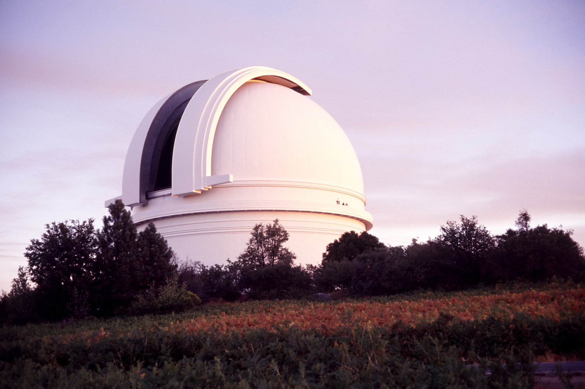

Observatories
Palomar

| 33°21′23″N 116°51′54″W | |
| 1,712 m | |
| Est. 1928 | |
| 4 Telescopes |
Palomar Observatory is an astronomical observatory located in San Diego County, California, United States, 145 kilometers (90 mi) southeast of Los Angeles, California, in the Palomar Mountain Range. It is owned and operated by the California Institute of Technology (Caltech) located in Pasadena, California. Research time at the observatory is granted to Caltech and its research partners, which include the Jet Propulsion Laboratory (JPL) and Cornell University.
Astronomer George Ellery Hale, whose vision created the Palomar Observatory, built the world's largest telescope four times in succession.